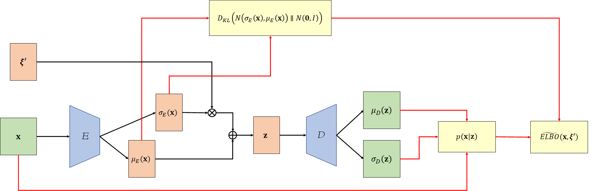

\(
\def\sc#1{\dosc#1\csod}
\def\dosc#1#2\csod{{\rm #1{\small #2}}}
\newcommand{\dee}{\mathrm{d}}
\newcommand{\Dee}{\mathrm{D}}
\newcommand{\In}{\mathrm{in}}
\newcommand{\Out}{\mathrm{out}}
\newcommand{\pdf}{\mathrm{pdf}}
\newcommand{\Cov}{\mathrm{Cov}}
\newcommand{\Var}{\mathrm{Var}}
\newcommand{\ve}[1]{\mathbf{#1}}
\newcommand{\mrm}[1]{\mathrm{#1}}
\newcommand{\etal}{{et~al.}}
\newcommand{\sphere}{\mathbb{S}^2}
\newcommand{\modeint}{\mathcal{M}}
\newcommand{\azimint}{\mathcal{N}}
\newcommand{\ra}{\rightarrow}
\newcommand{\mcal}[1]{\mathcal{#1}}
\newcommand{\X}{\mathcal{X}}
\newcommand{\Y}{\mathcal{Y}}
\newcommand{\Z}{\mathcal{Z}}
\newcommand{\x}{\mathbf{x}}
\newcommand{\y}{\mathbf{y}}
\newcommand{\z}{\mathbf{z}}
\newcommand{\tr}{\mathrm{tr}}
\newcommand{\sgn}{\mathrm{sgn}}
\newcommand{\diag}{\mathrm{diag}}
\newcommand{\Real}{\mathbb{R}}
\newcommand{\sseq}{\subseteq}
\newcommand{\ov}[1]{\overline{#1}}
\DeclareMathOperator*{\argmax}{arg\,max}
\DeclareMathOperator*{\argmin}{arg\,min}
\newcommand{\data}{\mathrm{data}}
\newcommand{\N}{\mathcal{N}}
\)
Variational Autoencoder
This note is an exposition on the variational autoencoder. This is a rewrite of the [PDF] note. I added some new ways to derive the algorithm that I found natural to the way I think.
Generative Modeling
- The overall goal of the VAE paper is to create a generative model.
- We have a domain of data $\mathcal{X} \subseteq \mrm{R}^n$ whose elements are denoted by $\ve{x}$.
- Typically, $\ve{x}$ is an image, and $\mathcal{X}$ is the set of images we are interested in; for example, the set of cat images.
- We assume that there's a random process that generates elements in $\mathcal{X}$. Let us denote the probability distribution of this random process as $p_{\data}$.
- We want to create a random process, whose probability distribution we shall denote by $p$, such that $p$ is similar to $p_{\data}$.
- In this age of deep learning, this random process typically involves sampling a random vector and feed it to a deep neural network.
- This neural network would be characterized by a set of parameters $\theta$.
- The question is to find $\theta$ such that $p$ is as close as possible to $p_{\data}$.
- Difference between two probability distribution can be measured by the Kullback-Leibler divergance:
\begin{align*}
D_{KL}(p_{\data}\| p)
&= E_{\ve{x} \sim p_{\data}(\ve{x})}\bigg[ \log \frac{p_{\data}(\ve{x})}{p(\ve{x})} \bigg] \\
&= \int_{\ve{z}} p_{\data}(\ve{x}) \log \frac{p_{\data}(\ve{x})}{p(\ve{x})}\,\dee \ve{x} \\
&= \int_{\ve{z}} p_{\data}(\ve{x}) \log \frac{1}{p(\ve{x})}\,\dee \ve{x} + \int_{\ve{z}} p_{\data}(\ve{x}) \log p_{\data(\ve{x})}\,\dee \ve{x} \\
&= - \int_{\ve{z}} p_{\data}(\ve{x}) \log p(\ve{x})\,\dee \ve{x} + \int_{\ve{z}} p_{\data}(\ve{x}) \log p_{\data(\ve{x})}\,\dee \ve{x} \\
&= - \int_{\ve{z}} p_{\data}(\ve{x}) \log p(\ve{x})\,\dee \ve{x} - \int_{\ve{z}} p_{\data}(\ve{x}) \log \frac{1}{p_{\data(\ve{x})}}\,\dee \ve{x} \\
&= - \int_{\ve{z}} p_{\data}(\ve{x}) \log p(\ve{x})\,\dee \ve{x} - H(p_{\data}) \\
&= - E_{\ve{x} \sim p_{\data(\ve{x})}} [\log p(\ve{x})] - H(p_{\data})
\end{align*}
where $H(p_{\data})$ is the entropy of the probability distribution $p_{\data}$. (Actually, the entropy is only defined with respect to a random variable, but we abuse the notation here. See more details in my notes on information theory.)
- We want the $p$ and $p_{\data}$ to be as similar as possible, so we should be minimizing the divergence above. In other words, we solve for:
\begin{align*}
\argmin_{\theta}\ D_{KL}(p_{\data}\|p)
&= \argmin_{\theta}\ \big({-E_{\ve{x} \sim p_{\data(\ve{x})}} [\log p(\ve{x})]} - H(p_{\data}) \big)
\end{align*}
Because $H(p_{\data})$ is the probability of the data distribution, it does not depend on $\theta$, and so can be thought of as a constant that cannot be optimized. As a result,
\begin{align*}
\argmin_{\theta}\ D_{KL}(p_{\data}\|p)
= \argmin_{\theta}\ {-E_{\ve{x} \sim p_{\data(\ve{x})}} [\log p(\ve{x})]}
= \argmax_{\theta}\ {E_{\ve{x} \sim p_{\data(\ve{x})}} [\log p(\ve{x})]}.
\end{align*}
So, making $p$ as close as possible to $p_\data$ is equivalent to maximizing $E_{\ve{x} \sim p_{\data(\ve{x})}} [\log p(\ve{x})]$, typically called the log-likelihood. Hence, this process is called maximum likelihood estimation (MLE).
- Operationally, we are given a dataset $\{\ve{x_1}, \ve{x_2}, \dotsc, \ve{x_N}\}$ where each element is sampled independently from $p_{\data}$. So,
\begin{align*}
E_{\ve{x} \sim p_{\data(\ve{x})}} [\log p(\ve{x})]
&\approx \frac{1}{N} \sum_{i=1}^N \log p(\ve{x}_i).
\end{align*}
As a result, the effective optimization function we solve is given by:
\begin{align*}
\argmax_{\theta}\ \frac{1}{N} \sum_{i=1}^N \log p(\ve{x}_i),
\end{align*}
or, equivalvently,
\begin{align*}
\argmin_{\theta}\ {-\frac{1}{N} \sum_{i=1}^N \log p(\ve{x}_i)}.
\end{align*}
Personally, I prefer the minimization problem because we do minimization in machine learning.
Latent Variable Model
- The kind of generative model that the VAE paper tries to create is a latent variable model.
- In particular, the VAE paper employs the following process:
- Sample a latent code $\ve{z} \in \Real^m$ from the normal distribution $\N(\ve{0}, I)$.
- Here, $\N(\mu, \Sigma)$ denote the normal (i.e., multi-variate Gaussian) with mean $\mu$ and covariance matrix $\Sigma$.
- Its probability distribution function is given by:
\begin{align*}
p_{\N(\mu, \Sigma)}(\ve{y}) = \frac{1}{\sqrt{(2\pi)^k \det \Sigma}} \exp\bigg({-\frac{1}{2}} (\ve{y}-\mu)^T \Sigma^{-1} (\ve{y} - \mu) \bigg).
\end{align*}
where $k$ is the number of dimensions of $\ve{y}$.
- Feed $\ve{z}$ to a neural network $D$, which we call the decoder. The network spits out two vectors $\mu_D(\ve{z})$ and $\sigma_D(\ve{z})$.
- Both vectors belong to $\Real^n$.
- In other words, they have the same dimensionality as an $\ve{x}$.
- Create $\ve{x}$ by sampling from the normal distribution $\N(\mu_D(\ve{z}), \diag(\sigma_D(\ve{z})))$.
- $\diag(\ve{v})$ denotes the diagonal matrix where the diagonal elements are the elements of $\ve{v}$.
- This can be done by sampling $\xi \in \Real^n$ from $\N(\ve{0},I)$ and then compute $\ve{x} = \mu_D(\ve{z}) + \sigma_D(\ve{z}) \otimes \xi$.
- Here, $\otimes$ denotes element-wise multiplication
- From the above process, we can write down several probabilities:
- First, the probability $p(\ve{z})$ of sampling a particular latent code $\ve{z}$. This is just:
\begin{align*}
p(\ve{z}) = \frac{\exp(-\|\ve{z}\|^2 /2 )}{\sqrt{(2\pi)^k}}
\end{align*}
- Second, the probability $p(\ve{x}|\ve{z})$ of sampling a particular $\ve{x}$ given that we have sampled $\ve{z}$ in the previous step:
\begin{align*}
p(\ve{x}|\ve{z}) = \frac{1}{\sqrt{(2\pi)^k \det \Sigma_D(\ve{z})}} \exp\bigg({-\frac{1}{2}} (\ve{x}-\mu_D(\ve{z}))^T (\Sigma_D(\ve{z}))^{-1} (\ve{x} - \mu_D(\ve{z})) \bigg)
\end{align*}
where $\Sigma_D(\ve{z})$ is used to denote $\diag(\sigma_D(\ve{z}))$.
- Third, the joint probability $p(\ve{x},\ve{z})$ is given by $p(\ve{x}|\ve{z})p(\ve{z})$.
- We shall not write down the full expression, but let us commit to memory now that it has a closed-form expression.
- Lastly, the marginal probability $p(\ve{x})$ is given by:
\begin{align*}
p(\ve{x}) = \int_{\ve{z}} p(\ve{x},\ve{z}) \,\dee\ve{z} = \int_{\ve{z}} p(\ve{x}|\ve{z})p(\ve{z}) \,\dee\ve{z}.
\end{align*}
- The marginal probability is important because we want to optimize $-E_{\ve{x} \sim p_{\data}(\ve{x})} [\log p(x)]$. To make optimization possible, we need an efficient way to evaluate $p(\ve{x})$ or $\log p(\ve{x})$.
Monte Carlo Integration and Importance Sampling
- Before we go ahead with what the VAE paper does, let's talk about how we would normally evaluate the integral that is $p(\ve{x})$. This would give us an idea on why the VAE paper does what it does.
- Say, you are tasked an integral $\int_{\ve{z}} f(\ve{z}) \,\dee\ve{z}$.
- Using the method of Monte Carlo integration:
- You choose a probability distribution $\tilde{p}$ over the domain of $\ve{z}$.
- You then samples $\ve{z}_1, \ve{z}_2, \dotsc, \ve{z}_K$ independently according to $\tilde{p}$.
- You compute $$\frac{1}{K} \sum_{i=1}^K \frac{f(\ve{z}_i)}{\tilde{p}(\ve{z}_i)}$$ and give this as an approximation of the value of the integral.
- The reason Monte Carlo integration works is because we can rewrite the integral as follows:
\begin{align*}
\int_\ve{z} f(\ve{z})\,\dee\ve{z}
= \int_\ve{z} \tilde{p}(\ve{z}) \frac{ f(\ve{z}) }{ \tilde{p}(\ve{z}) } \,\dee\ve{z}
= E_{\ve{z} \sim \tilde{p}(\ve{z})} \bigg[ \frac{ f(\ve{z}) }{ \tilde{p}(\ve{z}) } \bigg]
= \lim_{K \rightarrow \infty} \frac{1}{K} \sum_{i=1}^K \frac{f(\ve{z}_i)}{\tilde{p}(\ve{z}_i)}.
\end{align*}
- The takeaway from this is that Monte Carlo integration involves writing $\int_\ve{z} f(\ve{z})\,\dee\ve{z}$ as $E_{\ve{z} \sim \tilde{p}(\ve{z})} [ f(\ve{z}) / \tilde{p}(\ve{z}) ]$.
- The choice of $\tilde{p}$ is very important here. Choosing $\tilde{p}$ that approximates $f(\ve{z})$ well would allow us to get a very accurate estimate of the integral with a small number of samples.
- The act of judiciously choosing $\tilde{p}$ so that the estimate is accurate after using few examples is called importance sampling.
- Let's get back to the problem we have at hand and try to compute $\int_{\ve{z}} p(\ve{x}|\ve{z})p(\ve{z}) \,\dee\ve{z}$.
- What would be the best $\tilde{p}(\ve{z})$ that we can choose for the above integral?
- The answer is $\tilde{p}(\ve{z}) = p(\ve{z}|\ve{x})$, the so-called posterior probability. This is because, by Bayes' rule:
\begin{align*}
p(\ve{z}|\ve{x}) = \frac{p(\ve{x}|\ve{z}) p(\ve{z})}{p(\ve{x})}.
\end{align*}
So,
\begin{align*}
p(\ve{x}) = \frac{p(\ve{x}|\ve{z}) p(\ve{z})}{p(\ve{z}|\ve{x})}.
\end{align*}
In fact, if we sample $\ve{z}_1, \ve{z}_2, \dotsc, \ve{z}_K$ according to $p(\ve{z}|\ve{x})$, all of $\frac{p(\ve{x}|\ve{z}_i)p(\ve{z}_i)}{p(\ve{z}_i|\ve{x})}$ would evaluate to the same value of $p(\ve{x})$. So, using only one sample would give us the right ansnwer.
- The problem is, however, that we don't know how to compute $p(\ve{z}|\ve{x})$.
Variational Bayesian Method
- The variational Bayesian method approximates $p(\ve{z}|\ve{x})$ with a variational distribution $q(\ve{z}|\ve{x})$ which we explicitly choose so that we know to compute it.
- The VAE paper says $q(\ve{z}|\ve{x})$ is constructed with a neural network that takes $\ve{x}$ as its input.
- The network's parameters are optimized as we optimized the parameters of the decoder $D$.
- More on this later. Let us talk about $q(\ve{z}|\ve{x})$ without restricting its form first.
- Suppose we have any $q(\ve{z}|\ve{x})$ at all. Then, we can use $q(\ve{z}|\ve{x})$ in the importance sampling process. This give:
\begin{align*}
\log p(\ve{x})
= \log \int_{z} p(\ve{x}|\ve{z}) p(\ve{z})\,\dee\ve{z}
= \log E_{\ve{z} \sim q(\ve{z}|\ve{x})} \bigg[ \frac{p(\ve{x}|\ve{z})p(\ve{z})}{q(\ve{z}|\ve{x})} \bigg].
\end{align*}
- The expression $\log E_{\ve{z} \sim q(\ve{z}|\ve{x})} \bigg[ \frac{p(\ve{x}|\ve{z})p(\ve{z})}{q(\ve{z}|\ve{x})} \bigg]$ is not workable. So, we will try to transform it by moving the log inside the expectation.
- To do so, we use Jensen's inequality: for any concave function $f$ and any random variable $X$, it is true that: $$f(E[X]) \geq E[f(X)].$$
- Because the logarithm is a concave function, we have that:
\begin{align*}
\log p(\ve{x})
&= \log E_{\ve{z} \sim q(\ve{z}|\ve{x})} \bigg[ \frac{p(\ve{x}|\ve{z})p(\ve{z})}{q(\ve{z}|\ve{x})} \bigg]\\
&\geq E_{\ve{z} \sim q(\ve{z}|\ve{x})} \bigg[ \log \frac{p(\ve{x}|\ve{z})p(\ve{z})}{q(\ve{z}|\ve{x})} \bigg] \\
&= E_{\ve{z} \sim q(\ve{z}|\ve{x})} [ \log p(\ve{x}|\ve{z}) ] + E_{\ve{z} \sim q(\ve{z}|\ve{x})} \bigg[ \log \frac{p(\ve{z})}{q(\ve{z}|\ve{x})} \bigg] \\
&= E_{\ve{z} \sim q(\ve{z}|\ve{x})} [ \log p(\ve{x}|\ve{z}) ] - E_{\ve{z} \sim q(\ve{z}|\ve{x})} \bigg[ \log \frac{q(\ve{z}|\ve{x})}{p(\ve{z})} \bigg] \\
&= E_{\ve{z} \sim q(\ve{z}|\ve{x})} [ \log p(\ve{x}|\ve{z}) ] - D_{KL}(q(\ve{z}|\ve{x})\|p(\ve{z})).
\end{align*}
- The expression $E_{\ve{z} \sim q(\ve{z}|\ve{x})} [ \log p(\ve{x}|\ve{z}) ] - D_{KL}(q(\ve{z}|\ve{x})\|p(\ve{z}))$ is called the evidence lower bound (ELBO).
- For convenience, let us denote it by $\mrm{ELBO}(\ve{x})$.
- The variational Bayes method says to find the parameter $\theta$ of $p(\ve{x})$ by optimizing the ELBO instead of trying to work on $\log p(\ve{x})$. More concretely, our original problem is to find the solution to
\begin{align*}
\argmin_{\theta}\ {-E_{\ve{x} \sim p_{\data}(\ve{x})} [\log p(\ve{x})]}.
\end{align*}
We instead solve for
\begin{align*}
\argmin_{\theta}\ {-E_{\ve{x} \sim p_{\data}(\ve{x})} [\mrm{ELBO}(\ve{x})]}
\end{align*}
instead.
- While the ELBO is not exactly the log-likelihood, it has the advantage that we evaluate all the terms in it because we can choose $q(\ve{z}|\ve{x})$ so that we know how to compute all of its terms.
- So, how accurate is using the ELBO rather than the log-likelihood? We can get an answer through some manipulations. First, let us start by noting that $q(\ve{z}|\ve{x})$ is a probability distribution, so it must integrate to $1$ over the domain of $z$. Hence, we can write:
\begin{align*}
\log p(\ve{x}) = \Big(\log p(\ve{x})\Big) \times 1 = \log p(\ve{x}) \bigg( \int_{\ve{z}} q(\ve{z}|\ve{x})\, \dee\ve{z} \bigg)
\end{align*}
Now, $\log p(x)$ has no dependence on $z$, so we can treat it like a constant and slide it inside the integral sign.
\begin{align*}
\log p(\ve{x})
&= \int_{\ve{z}} q(\ve{z}|\ve{x}) \log p(\ve{x})\, \dee\ve{z} \\
&= E_{\ve{z} \sim q(\ve{z}|\ve{x})} [\log p(\ve{x})] \\
&= E_{\ve{z} \sim q(\ve{z}|\ve{x})} \bigg[\log \frac{p(\ve{x}|\ve{z}) p(\ve{z})}{p(\ve{z}|\ve{x})} \bigg] \\
&= E_{\ve{z} \sim q(\ve{z}|\ve{x})} \bigg[\log \bigg( \frac{p(\ve{x}|\ve{z}) p(\ve{z})}{p(\ve{z}|\ve{x})} \frac{q(\ve{z}|\ve{x})}{q(\ve{z}|\ve{x})} \bigg) \bigg] \\
&= E_{\ve{z} \sim q(\ve{z}|\ve{x})} \bigg[\log \bigg( p(\ve{x}|\ve{z}) \frac{p(\ve{z})}{q(\ve{z}|\ve{x})} \frac{q(\ve{z}|\ve{x})}{p(\ve{z}|\ve{x})} \bigg) \bigg] \\
&= E_{\ve{z} \sim q(\ve{z}|\ve{x})} [ \log p(\ve{x}|\ve{z})]
+ E_{\ve{z} \sim q(\ve{z}|\ve{x})} \bigg[ \log \frac{p(\ve{z})}{q(\ve{z}|\ve{x})} \bigg]
+ E_{\ve{z} \sim q(\ve{z}|\ve{x})} \bigg[ \log \frac{q(\ve{x}|\ve{z})}{p(\ve{z}|\ve{x})} \bigg] \\
&= E_{\ve{z} \sim q(\ve{z}|\ve{x})} [ \log p(\ve{x}|\ve{z})]
- E_{\ve{z} \sim q(\ve{z}|\ve{x})} \bigg[ \log \frac{q(\ve{z}|\ve{x})}{p(\ve{z})} \bigg]
+ E_{\ve{z} \sim q(\ve{z}|\ve{x})} \bigg[ \log \frac{q(\ve{x}|\ve{z})}{p(\ve{z}|\ve{x})} \bigg] \\
&= E_{\ve{z} \sim q(\ve{z}|\ve{x})} [ \log p(\ve{x}|\ve{z})]
- D_{KL}(q(\ve{z}|\ve{x})\|p(\ve{z}))
+ D_{KL}(q(\ve{z}|\ve{x})\|p(\ve{z}|\ve{x})) \\
&= \mrm{ELBO}(\ve{x}) + D_{KL}(q(\ve{z}|\ve{x})\|p(\ve{z}|\ve{x})).
\end{align*}
In other words,
\begin{align*}
\mrm{ELBO}(\ve{x}) = \log p(\ve{x}) - D_{KL}(q(\ve{z}|\ve{x})\|p(\ve{z}|\ve{x})).
\end{align*}
- So, optimizing ELBO is close to optimizing the log-likelihood if $D_{KL}(q(\ve{z}|\ve{x})\|p(\ve{z}|\ve{x}))$ is small. In other words, when $q(\ve{z}|\ve{x})$ is similar to $p(\ve{z}|\ve{x})$.
- Our hope is that, by using a high capacity model such as a deep neural network, we can find the parameters for the network so that $q(\ve{x}|\ve{z})$ is very close to the distribution $p(\ve{x}|\ve{z})$, which is also defined by a neural network.
Variational Autoencoder
- The VAE paper implements $q(\ve{z}|\ve{x})$ with a neural network E, called the encoder, that takes $\ve{x}$ as an input.
- The latent code $\ve{z}$ is generated from a data vector $\ve{x}$ with the following process:
- $\ve{x}$ is passed to $E$, which spits out two vectors $\mu_E(\ve{x})$ and $\sigma_E(\ve{x})$.
- Both vectors belong to $\Real^m$ and so have the same dimensionality as a typical $\ve{z}$.
- The latent vector $\ve{z}$ is created by sampling from $\N(\mu_E(\ve{x}), \diag(\sigma_E(\ve{x}))).$
- Again, this is done by sampling $\xi' \in \Real^m$ from $\N(\ve{0},I)$ and compute $\ve{z} = \mu_E(\ve{x}) + \sigma_E(\ve{x}) \otimes \xi'$.
- With the above definition for $q(\ve{z}|\ve{x})$, we now show how to compute $\mrm{ELBO}(\ve{x})$.
- First, $D_{KL}(q(\ve{z}\|\ve{x})\| p(\ve{z}))$ are just the KL divergence between two normal distributions:
\begin{align*}
D_{KL}(q(\ve{z}\|\ve{x})\| p(\ve{z}))
= D_{KL}( \N(\mu_E(\ve{x}), \Sigma_E(\ve{x})) \| \N(\ve{0}, I))
= \frac{\tr(\Sigma_E(\ve{x})) + \mu_E(\ve{x})^T \mu_E(\ve{x}) - m + \log \det \Sigma_E(\ve{x}) }{2}
\end{align*}
where $\Sigma_E(\ve{x})$ denotes $\diag(\sigma_E(\ve{x}))$.
- Second, consider the term $E_{\ve{z} \sim q(\ve{z}|\ve{x})} [\log p(\ve{x}|\ve{z})]$. We note that $\ve{z}$ is a deterministic function of $\xi'$, so:
\begin{align*}
E_{\ve{z} \sim q(\ve{z}|\ve{x})} [\log p(\ve{x}|\ve{z})]
&= E_{\xi \sim \N(\ve{0},I)} [\log p(\ve{x}|\mu_E(\ve{x}) + \sigma_E(\ve{x}) \otimes \xi' )].
\end{align*}
- With the rewriting above, we have that:
\begin{align*}
\mrm{ELBO}(\ve{x})
&=
E_{\xi \sim \N(\ve{0},I)} [\log p(\ve{x}|\mu_E(\ve{x}) + \sigma_E(\ve{x}) \otimes \xi' )]
+ D_{KL}( \N(\mu_E(\ve{x}), \Sigma_E(\ve{x})) \| \N(\ve{0}, I))
\\
&= E_{\xi \sim \N(\ve{0},I)} [
\log p(\ve{x}|\mu_E(\ve{x}) + \sigma_E(\ve{x}) \otimes \xi' )
+ D_{KL}( \N(\mu_E(\ve{x}), \Sigma_E(\ve{x})) \| \N(\ve{0}, I))
].
\end{align*}
Note that we can slide the divergence $D_{KL}( \N(\mu_E(\ve{x}), \Sigma_E(\ve{x})) \| \N(\ve{0}, I)$ inside the expectation $E_{\xi \sim \N(\ve{0},I)}[\cdot]$ because it is a constant with respect to $\xi$.
- Now, because inside the expectation operator is an expression that involves no integral, let us define:
\begin{align*}
\widetilde{\mrm{ELBO}}(\ve{x}, \xi')
= \log p(\ve{x}|\mu_E(\ve{x}) + \sigma_E(\ve{x}) \otimes \xi' )
+ D_{KL}( \N(\mu_E(\ve{x}), \Sigma_E(\ve{x})) \| \N(\ve{0}, I)),
\end{align*}
which gives
\begin{align*}
\mrm{ELBO}(\ve{x})
= E_{\xi \sim \N(\ve{0},I)} [ \widetilde{\mrm{ELBO}}(\ve{x}, \xi') ].
\end{align*}
- Let us get back to the original optimization problem. We can now transform it as follows:
\begin{align*}
\argmin_\theta\ E_{\ve{x} \sim p_{\data}(\ve{x})}[ -\mrm{ELBO}(\ve{x})]
= \argmin_\theta\ E_{\ve{x} \sim p_{\data}(\ve{x})}\Big[ -E_{\xi \sim \N(\ve{0},I)} [ \widetilde{\mrm{ELBO}}(\ve{x}, \xi') ] \Big]
= \argmin_\theta\ E_{\ve{x} \sim p_{\data}(\ve{x}), \xi \sim \N(\ve{0},I)}[ -\widetilde{\mrm{ELBO}}(\ve{x}, \xi') ].
\end{align*}
The nice thing about the above expression is that $\widetilde{\mrm{ELBO}}(\ve{x}, \xi')$ is a deterministic function of its parameters, and so can be implemented with a neural network that takes $\ve{x}$ and $\xi'$ as inputs.
- Rewriting the functions so that the source of randomness (in our case, $\xi$) becomes an explicit input is called the reparameterization trick. It helps us define a deterministic neural network that can be used to compute the objective function.
- Now, the above problem tries to find parameters $\theta$ of the decoder $D$ while the encoder $E$ is left fixed. The nice thing about VAE is that there's nothing stopping us from optimizing for the parameters $\phi$ of $E$ at the same time! Ultimately, the optimization problem becomes:
\begin{align*}
\argmin_{\theta, \phi}\ E_{\ve{x} \sim p_{\data}(\ve{x}), \xi' \sim \N(\ve{0},1)} [-\widetilde{\mrm{ELBO}}(\ve{x}, \xi')].
\end{align*}
- From the optimization problem above, we can write down an algorithm for training VAE as follows:
- Sample $\ve{x}$ according to $p_{\data}$ and sample $\xi'$ according to $\N(\ve{0},I)$.
- Compute the loss $-\mrm{ELBO}(\ve{x}, \xi')$.
- Compute the gradients of $-\mrm{ELBO}(\ve{x}, \xi')$ wrt $\theta$ and $\phi$.
- Update $\theta$ and $\phi$ with the gradients. (Can use any gradient-based algorithm; e.g. Adam, RMSProp, etc.)
- Repeat the 4 steps above until satisfied.
- To deepen our understanding, let us write down the computational graph to compute the loss function $-\widetilde{\mrm{ELBO}}(\ve{x}, \xi')$.

It is interesting to note that the decoded image is ever sampled at any point in the computation of the loss function.
- At test time, to generate a sample, we would sample $\ve{z}$ from the normal distribution. From it we would compute $\mu_D(\ve{z})$. However, I think we can just return $\mu_D(\ve{z})$ as the generated sample because sampling from $\N(\mu_D(\ve{z}), \sigma_D(\ve{z}))$ would give us noisy data. This is especially undesirable if we talk about images.
Another Interpretation
- In the paper, the VAE seems to be drived from heavy use of probability and information theory machinery. I found this totally unintuitive. An alternative interpretation would afford us a deeper understanding, which can lead to further improvements.
- To ease our thinking, let's assume for a moment that the decoder $D$ and the encoder $E$ are deterministic and only output a single output, just like a normal autoencoder.
- Now, let's look what the behavior of the VAE should be with respect to the real data.
- First, for each real data item $\ve{x}$ coming from $p_{\data}$, we want $D(E(\ve{x})) = \ve{x}$ because, well, $E$ and $D$ should form an autoencoder. The loss term
\begin{align*}
E_{\ve{z} \sim q(\ve{z}|\ve{x})} [ \log p(\ve{x}|\ve{z}) ]
\end{align*}
ensures that $\ve{x}$ should be likely to emerge at the end of the pipeline if we start with encoding $\ve{x}$. As a result, this term is basically a reconstruction loss. It gives meaning to the action of the decoder.
- Second, let's look at the distribution of $E(\ve{x})$ where $\ve{x}$ is sampled from $p_{\data}$. It is clear that we want this distribution to be as close to $\N(\ve{0},I)$ as possible. The thinking goes like this:
- If the reconstruction term above works well, then $D$ should be able to turn latent code $\ve{z}$ that distributes like $E(\ve{x})$ into real data.
- If we force the distribution of $E(\ve{x})$ to be as close as possible to $\N(\ve{0},I)$, then sampling $\ve{z} \sim \N(\ve{0},I)$ and computing $D(\ve{z})$ should get us something similar to the real data.
Here, the loss term
\begin{align*}
D_{KL}(\N(\mu_E(\ve{x}), \sigma_E(\ve{x})) \| N(\ve{0},I))
\end{align*}
tries to enfore this by making sure that all the conditional distribution $q(\ve{z}|\ve{x})$ looks like $N(\ve{0},I)$. Because the conditional distribution $q(\ve{z}|\ve{x})$ with respect to each $\ve{x}$ looks like $N(\ve{0},I)$, the marginal distribution of $\ve{z}$ as a whole should also look like $N(\ve{0},I)$ because the marginal distribution can be thought of being made up from the conditional distributions. Hence, this loss term gives meaning to the prior distribution $p(\ve{z})$.
- From the discussion above, one can spot that
$D_{KL}(\N(\mu_E(\ve{x}), \sigma_E(\ve{x})) \| N(\ve{0},I))$
might be an overkill. This is because, in the end, we only want the overall distribution of $D(\ve{x})$ to be close to $\N(\ve{0},I)$. It's not necessary to make sure that all the conditional distributions $q(\ve{z}|\ve{x})$ be close to $\N(\ve{0},I)$. (I'm pretty sure that someone has noticed this, and there might be a paper about this out already.)
Last modified: 2020/07/26
{kind=link}